소방설비산업기사(기계) (2016-03-06 기출문제)
1과목: 소방원론
1. 할론 1301의 화학식으로 옳은 것은?
- CBr3Cl
- CBrCI3
- CF3Br
- CFBr3
(정답률: 83%)

2. 화재 시 연소의 연쇄반응을 차단하는 소화방식은?
- 냉각소화
- 화학소화
- 질식소화
- 가스제거
(정답률: 62%)
3. 분말 소화약제의 주성분 중에서 A,B,C 급 화재 모두에 적용성이 있는 것은?
- KHCO3
- NaHCO3
- Al2(SO4)3
- NH4H2PO4
(정답률: 83%)
4. 공기 중에 분산된 밀가루, 알루미늄가루 등이 에너지를 받아 폭발하는 현상은?
- 분진폭발
- 분무폭발
- 충격폭발
- 단열압축폭발
(정답률: 83%)
5. 건축물에 화재가 발생할 때 연소확대를 방지하기 위한 계획에 해당되지 않는 것은?
- 수직계획
- 입면계획
- 수평계획
- 용도계획
(정답률: 64%)
6. 대형소화기에 충전하는 소화약제 양의 기준으로 틀린 것은?
- 할로겐화물소화기 : 20kg 이상
- 강화액소화기 : 60L 이상
- 분말소화기 : 20kg 이상
- 이산화탄소소화기 : 50kg 이상
(정답률: 58%)
7. 피난시설의 안전구획 중 1차 안전구획에 속하는 것은?
- 계단
- 복도
- 계단부속실
- 피난층에서 외부와 직면한 현관
(정답률: 67%)
8. 기체연료의 연소형태로서 연료와 공기를 인접한 2개의 분출구에서 각각 분출시켜 계면에서 연소를 일으키게 하는 것은?
- 증발연소
- 자기연소
- 확산연소
- 분해연소
(정답률: 74%)
9. 산화열에 의해 자연발화 될 수 있는 물질이 아닌 것은?
- 석탄
- 건성유
- 고무 분말
- 퇴비
(정답률: 57%)
10. 질소(N2)의 증기비중은 약 얼마인가?
- 0.8
- 0.97
- 1.5
- 1.8
(정답률: 79%)
11. 건축물 화재의 가혹도에 영향을 주는 주요소로 적합하지 않은 것은?
- 공기의 공급량
- 가연물질의 연소열
- 가연물질의 비표면적
- 화재시의 기상
(정답률: 66%)
12. 수소 4kg이 완전연소 할 때 생성되는 수증기는 몇 kmol 인가?
- 1
- 2
- 4
- 8
(정답률: 59%)
13. 전기화재의 원인으로 볼 수 없는 것은?
- 승압에 의한 발화
- 과전류에 의한 발화
- 누전에 의한 발화
- 단락에 의한 발화
(정답률: 70%)
14. 소화약제로 널리 사용되는 물의 물리적 성질로 틀린 것은?
- 대기압 하에서 용융열은 약 80cal/g이다.
- 대기압 하에서 증발 잠열은 약 539cal/g이다.
- 대기압 하에서 액체상의 비열은 1cal/g℃이다.
- 대기압 하에서 액체에서 수증기로 상변화가 일어나면 체적은 500배 증가한다.
(정답률: 78%)
15. 가연물의 종류 및 성상에 따른 화재의 분류 중 A급 화재에 해당하는 것은?
- 통전중인 전기설비 및 전기기기의 화재
- 마그네슘, 칼륨 등의 화재
- 목재, 섬유 화재
- 도시가스 화재
(정답률: 85%)
16. 동일 장소에서 취급이 가능한 위험물들끼리 옳게 짝지어진 것은?
- 과염소산칼륨과 톨루엔
- 과염소산과 황린
- 마그네슘과 유기과산화물
- 가솔린과 과산화수소
(정답률: 63%)
17. 열에너지원 중 화학열의 종류별 설명으로 옳지 않은 것은?
- 자연발열이라 함은 어떤 물질이 외부로부터 열의 공급을 받지 아니하고 온도가 상승하는 현상이다.
- 분해열이나 함은 화합물이 분해할 때 발생하는 열을 말한다.
- 용해열이라 함은 어떤 물질이 분해될 때 발생하는 열을 말한다.
- 연소열은 어떤 물질이 완전히 산화되는 과정에서 발생하는 열을 말한다.
(정답률: 72%)
18. 폭발에 대한 설명으로 틀린 것은?
- 보일러 폭발은 화학적 폭발이라 할 수 없다.
- 분무폭발은 기상폭발에 속하지 않는다.
- 수증기 폭발은 기상 폭발에 속하지 않는다.
- 화약류 폭발은 화학적 폭발이라 할 수 있다.
(정답률: 64%)
19. 물질의 연소범위에 대한 설명 중 옳은 것은?
- 연소범위의 상한이 높을수록 발화위험이 낮다.
- 연소범위의 상한과 하한사이의 폭은 발화위험과 무관하다.
- 연소범위의 하한이 낮은 물질은 취급 시 주의를 요한다.
- 연소범위의 하한이 낮은 물질은 발열량이 크다.
(정답률: 70%)
20. 포소화약제 중 유류화재의 소화 시 성능이 가장 우수한 것은?
- 단백포
- 수성막포
- 합성계면 활성제포
- 내알콜포
(정답률: 77%)
2과목: 소방유체역학
21. 베르누이(Bernoulli)방정식으로 맞는 것은?
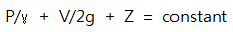
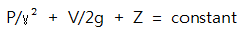
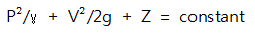
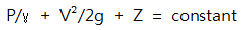
(정답률: 67%)
22. 공기 중에서 무게가 900N인 돌이 물속에서의 무게가 400N 일 때 이 돌의 비중은?
- 1.4
- 1.6
- 1.8
- 2.25
(정답률: 47%)
23. 가로(80cm)×세로(50cm)이고 300℃로 가열된 평판에 수직한 방향으로 25℃의 공기를 불어주고 있다. 대류 열전달계수가 25W/m2 ℃일 때 공기를 불어넣는 면에서의 열전달률은 약 몇 kW인가?
- 2.0
- 2.75
- 5.1
- 7.3
(정답률: 63%)
24. 밀도가 788.6kg/m3 이고, 표면장력계수가 0.022N/m 인 유체 속에 지름 1.5×10-3m의 유리관을 연직으로 세웠다. 유리와 액체의 접촉각이 45°라고 할 때 유리관 내 액체의 상승높이는? (단, 중력가속도 g=9.806 m/s2)
- 5.36×10-3m
- 5.28×10-3m
- 1.86×10-5m
- 1.84×10-5m
(정답률: 43%)
25. 펌프의 흡입 및 토출관의 직경이 동일한 소화전 펌프에서 흡입 측의 진공계는 24.5kPa를 가리키고 진공계보다 수직으로 1.0m 높은 위치에 있는 토출 측 압력계의 지침은 382kPa이라면 펌프의 전양정(m)은?
- 42.5
- 38.6
- 18.9
- 1.004
(정답률: 46%)
26. 600K의 고온열원과 300K의 저온열원 사이에서 작동하는 카르노 사이클에 공급하는 열량이 사이클 당 200kJ이라 할 때 1 사이클 당 외부에 하는 일은?
- 100kJ
- 200kJ
- 300kJ
- 400kJ
(정답률: 51%)
27. 용기 속의 유체를 회전날개를 이용하여 젓고 있다. 용기 외부로 방출된 열은 2000kJ이고 회전날개를 통해 용기 내로 입력되는 일은 5000kJ 일 때 용기 내 유체의 내부에너지 증가량은?
- 2000kJ
- 3000kJ
- 5000kJ
- 7000kJ
(정답률: 67%)
28. 시차 압력계에서 압력차(PA-PB) 는 몇 kPa 인가? (단, H1=250mm, H2=200mm, H3=700mm 이고 수온의 비중은 13.6이다.)
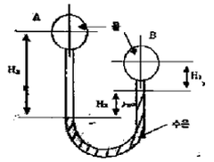
- 3.107
- 22.25
- 31.07
- 222.5
(정답률: 52%)
29. 옥내소화전에서 전체의 양정이 28m, 펌프의 효율이 80%, 펌프의 토출량이 1m3/min 이라면 전동기의 용량은 약 몇 kW 인가? (단, 전달계수 1.1이다.)
- 4.35
- 5.48
- 6.01
- 6.28
(정답률: 56%)
30. 안지름 50cm의 수평 원관 속을 물이 흐르고 있다. 입구 구역이 아닌 50m 길이에서 80kPa의 압력강하가 생겼다. 관벽에서의 전단응력은 몇 Pa인가?
- 0.002
- 200
- 8000
- 0
(정답률: 49%)
31. 그림은 원유, 물, 공기에 대하여 전단응력과 속도기울기의 관계를 나타낼 것이다. 물에 해당하는 선은?
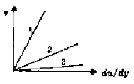
- 1
- 2
- 3
- 주어진 정보로는 알 수 없다.
(정답률: 76%)
32. A점에서 힌지로 연결되어 있는 수문을 열기 위한 수문에 수직인 최소한의 힘이 7355 N이라면 수문의 폭 b는 몇 m인가? (단, 수문의 무게는 무시함)
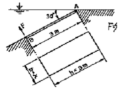
- 0.75
- 0.5
- 0.4
- 0.3
(정답률: 49%)
33. 안지름 20cm인 원관이 안지름 40cm인 원관에 급확대 연결된 관로에 0.2m3/s의 유체가 흐를 때 급확대부에서 발생하는 손실수두는 약 몇 m인가?
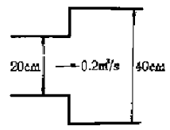
- 1.16
- 1.45
- 1.62
- 1.83
(정답률: 47%)
34. NPSH(유효흡입양정)에 관한 설명으로 틀린 것은?
- NPSHav(이용 가능한 유효흡입양정)가 작을수록 같은 조건에서 공동현상이 일어날 가능성이 커진다.
- 필요한 유효흡입양정은 NPSHav보다 커야 공동현상이 발생되지 않는다.
- NPSHav는 포화 증기압이 커지면 점차 작아진다.
- 물의 온도가 올라가면 NPSHav가 작아져서 공동현상의 발생가능성이 커진다.
(정답률: 49%)
35. 그림과 같이 수평으로 분사된 유량 Q의 분류가 경사진 고정 평판에 충돌한 후 양쪽으로 분리되어 흐르고 있다. 윗 방향의 유량이 Q1=0.7Q 일 때 수평선과 관이 이루는 각 θ는 몇 도인가? (단, 이상유체의 흐름이고 중력과 압력은 무시한다.)
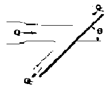
- 76.4
- 66.4
- 56.4
- 46.4
(정답률: 47%)
36. 운동량의 단위로 맞는 것은?
- N
- J/s
- N·s2/m
- N·s
(정답률: 57%)
37. 안지름 65mm의 관내를 유량 0.24 m3/min로 물이 흘러간다면 평균 유속은 몇 m/s인가?
- 1.2
- 2.4
- 3.6
- 4.8
(정답률: 63%)
38. 이상기체의 기체상수 R을 압력 P, 비체적 v, 절대 온도 T의 관계로 나타낸 것은?
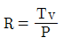
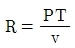
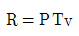
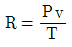
(정답률: 64%)
39. 배관내 유체의 유량 또는 유속 측정법이 아닌 것은?
- 삼각위어에 의한 방법
- 오리피스에 의한 방법
- 벤츄리관에 의한 방법
- 피토관에 의한 방법
(정답률: 65%)
40. 20℃에서 물이 지름 75mm인 관속을 1.9×10-3m3/s로 흐르고 있다. 이 때 레이놀즈 수는 얼마 정도인가? (단, 20℃일 때 물의 동점성계수는 1.006×10-6m2/s이다.)
- 1.13×104
- 1.99×104
- 2.83×104
- 3.21×104
(정답률: 45%)
3과목: 소방관계법규
41. 위험물안전관리법령상 제4류 위험물 인화성 액체의 품명 및 지정수량으로 옳은 것은?
- 제1석유류(수용성액체) : 100리터
- 제2석유류(수용성액체) : 500리터
- 제3석유류(수용성액체) : 1000리터
- 제4석유류 : 6000리터
(정답률: 60%)
42. 제조소에서 저장 또는 취급하는 위험물별 주의사항을 표시한 게시판으로 옳지 않은 것은?
- 제4류 위험물 : 화기주의
- 제5류 위험물 : 화기엄금
- 제2류 위험물(인화성고체 제외) : 화기주의
- 제3류 위험물 중 자연발화성물질 : 화기엄금
(정답률: 70%)
43. 소방대상물의 건축허가 등의 동의요구를 할 때 제출해야 할 서류로 틀린 것은?
- 소방시설 설치계획표
- 소방시설공사업등록증
- 임시소방시설 설치계획서
- 소방시설의 층별 평면도 및 층별 계통도
(정답률: 61%)
44. 제 1종 판매취급소에서 저장 또는 취급할 수 있는 위험물의 수량 기준으로 옳은 것은?
- 지정수량의 20배 이하
- 지정수량의 20배 이상
- 지정수량의 40배 이하
- 지정수량의 40배 이상
(정답률: 44%)
45. 감리업자가 소방공사의 감리를 완료할 때 그 감리 결과를 통보해야하는 대상자가 아닌 것은?
- 시·도지사
- 소방시설공사의 도급인
- 특정소방대상물의 관계인
- 특정소방대상물의 공사를 감리한 건축사
(정답률: 47%)
46. 화재예방을 위하여 불을 사용하는 설비의 관리기준 중 용접 또는 용단 작업자로부터 반경 몇 m 이내에 소화기를 갖추어야 하는가? (단, 산업안전보건법 제23조의 적용을 받는 사업장의 경우는 제외한다.)
- 1
- 3
- 5
- 7
(정답률: 58%)
47. 방염성능기준 이상의 실내장식물 등을 설치하여야 하는 특정소방대상물이 아닌 것은?
- 다중이용업의 영업장
- 의료시설 중 정신의료기관
- 방송통신시설 중 방송국 및 촬영소
- 건축물 옥내에 있는 운동시설 중 수영장
(정답률: 69%)
48. 화재조사를 하는 관계 공부원이 화재조사를 수행하면서 알게 된 비밀을 다른 사람에게 누설 시 벌칙기준으로 옳은 것은?
- 100만원 이하의 벌금
- 200만원 이하의 벌금
- 300만원 이하의 벌금
- 400만원 이하의 벌금
(정답률: 69%)
49. 특정소방대상물 중 업무시설에 해당되지 않는 것은?
- 방송국
- 마을회관
- 주민자치센터
- 변전소
(정답률: 58%)
50. 화재경계지구로 지정할 수 있는 대상이 아닌 것은?
- 시장지역
- 소방출동로가 없는 지역
- 공장·창고가 밀집한 지역
- 콘크리트 건물이 밀집한 지역
(정답률: 75%)
51. 하자보수 보증기간이 2년인 소방시설은?
- 옥내소화전설비
- 무선통신보조설비
- 자동화재탐지설비
- 물분무등소화설비
(정답률: 74%)
52. 원활한 소방활동을 위하여 실시하는 소방용수시설에 대한 조사결과는 몇 년간 보관하는가?
- 2년
- 3년
- 4년
- 영구
(정답률: 73%)
53. 형식승인을 받지 아니한 소방용품을 소방시설 공사에 사용한 자에 대한 벌칙기준으로 옳은 것은?(관련 규정 개정전 문제로 여기서는 기존 정답인 3번을 누르면 정답 처리됩니다. 자세한 내용은 해설을 참고하세요.)
- 7년 이하의 징역 또는 5000만원 이하의 벌금
- 5년 이하의 징역 또는 3000만원 이하의 벌금
- 3년 이하의 징역 또는 1500만원 이하의 벌금
- 1년 이하의 징역 또는 1000만원 이하의 벌금
(정답률: 70%)
54. 소방기본법상 화재경계지구 안의 소방대상물에 대한 소방특별조사를 거부한 자에 대한 벌칙기준으로 옳은 것은?
- 100만원 이하의 벌금
- 200만원 이하의 벌금
- 300만원 이하의 벌금
- 400만원 이하의 벌금
(정답률: 44%)
55. 펄프공장의 작업장, 음료수 공장의 충전을 하는 작업장 등과 같이 화재안전기준을 적용하기 어려운 특정소방대상물에 설치하지 아니할 수 있는 소방시설이 아닌 것은?
- 연결송수관설비
- 스프링클러설비
- 상수도소화용수설비
- 연결살수설비
(정답률: 42%)
56. 간이스프링클러설비를 설치하여야 할 특정소방대상물의 기준으로 옳은 것은?
- 근린생활시설로 사용하는 부분의 바닥면적 합계가 1000m2이상인 것은 모든 층
- 교육연구시설 내에 합숙소로서 연면적 500m2이상인 것
- 정신병원과 의료재활시설은 제외한 요양병원으로 사용되는 바닥면적의 합계가 300m2이상 600m2미만인 시설
- 정신의료기관 또는 의료재활시설로 사용되는 바닥면적의 합계가 600m2미만인 시설
(정답률: 45%)
57. 전문 소방시설공사업의 등록기준 중 보조기술인력은 최소 몇 인 이상 있어야 하는가?
- 1
- 2
- 3
- 4
(정답률: 70%)
58. 소방시설 중 소화기구 및 단독경보형감지기를 설치하여야 하는 대상으로 옳은 것은?
- 아파트
- 기숙사
- 오피스텔
- 단독주택
(정답률: 61%)
59. 지정수량 미만인 위험물의 저장 또는 취급기준은 무엇으로 정하는가?
- 시·도의 조례
- 총리령
- 행정자치부령
- 대통령령
(정답률: 70%)
60. 소방기본법에 규정된 내용에 관한 설명으로 옳은 것은?
- 소방대상물에는 항해 중인 선박도 포함된다.
- 관계인이란 소방대상물의 관리자와 점유자를 제외한 실제 소유자를 말한다.
- 소방대의 임무는 구조와 구급활동을 제외한 화재현장에서의 화재진압활동이다.
- 의용소방대원과 의무소방원도 소방대의 구성원이다.
(정답률: 74%)
4과목: 소방기계시설의 구조 및 원리
61. 이산화탄소 소화설비 이산화탄소 소화약제의 저압식 저장용기 설치기준으로 옳은 것은?
- 충전비는 1.5이상 1.9이하로 설치
- 압력경보장치는 2.3MPa 이상 1.9MPa이하에서 작동
- 안전밸브는 내압시험 압력의 0.8배~1.0배에서 작동
- 자동냉동장치는 용기내부의 온도가 영하 18℃이상에서 2.1MPa 의 압력을 유지하도록 설치
(정답률: 45%)
62. 연결살수설비 전용헤드를 사용하는 배관의 설치에서 하나의 배관에 부착하는 살수헤드가 4개일 때 배관의 구경은 몇 mm 이상으로 하는가?
- 40
- 50
- 65
- 80
(정답률: 61%)
63. 포소화설비 수동식 기동장치의 설치기준으로 틀린 것은?
- 2 이상의 방사구역은 방사구역을 선택할 수 있는 구조로 한다.
- 바닥으로부터 0.8m 이상 1.5m 이하의 위치에 설치한다.
- 주차장에 설치하는 포소화설비의 기동장치는 방사구역마다 1개 이상 설치한다.
- 항공기격납고에 설치하는 포소화설비의 기동장치는 방사구역마다 1개 설치한다.
(정답률: 63%)
64. 급기가압 제연방식의 문제점에 대한 설명으로 틀린 것은?
- 가압식 외부로 누설된 공기가 화재실로 이어지면 화재를 강화시킬 수 있다.
- 피난 시 가압실의 문을 열어두면 급기 가압용 공기를 공급하여도 효과가 없다.
- 문을 괴어놓거나 하여 자동폐쇄장치를 무효화하기 쉽다.
- 상시 급기가압을 하므로 송풍기의 설치비용등이 과대하다.
(정답률: 58%)
65. 옥외소화전설비 노즐선단에서의 방수 압력은 몇 MPa 이상이어야 하는가?
- 0.2
- 0.25
- 0.3
- 0.4
(정답률: 77%)
66. 숙박시설·노유자시설 및 의료시설로 사용되는 층에 있어서는 그 층의 바닥면적 몇 m2 마다 1개 이상의 피난기구를 설치해야 하는가?
- 500
- 600
- 800
- 1000
(정답률: 63%)
67. 부속용도로 사용되는 부분 중 음식점의 주방에 추가해야 할 소화기의 능력단위는? (단, 지하가의 음식점을 포함한다.)
- 1단위 이상/해당 용도의 바닥면적 10m2
- 1단위 이상/해당 용도의 바닥면적 15m2
- 1단위 이상/해당 용도의 바닥면적 20m2
- 1단위 이상/해당 용도의 바닥면적 25m2
(정답률: 47%)
68. 분말소화약제 가압식 저장용기는 최고사용 압력의 몇 배 이하의 압력에서 작동하는 안전밸브를 설치해야 하는가?
- 0.8배
- 1.2배
- 1.8배
- 2.0배
(정답률: 58%)
69. 근린생활시설 중 입원실이 있는 의원 3층에 적응성이 있는 피난기구는?
- 피난사다리
- 완강기
- 공기안전매트
- 구조대
(정답률: 52%)
70. 측압식 분말소화기의 지시압력계에 표시된 정상 사용압력 범위는?
- 0.6~0.9MPa
- 0.7~0.9MPa
- 0.6~0.98MPa
- 0.7~0.98MPa
(정답률: 58%)
71. 특별피난계단의 계단실 및 부속실 제연설비에서 사용하는 유입공기의 배출방식으로 적합하지 않는 것은?
- 배출구에 따른 배출
- 제연설비에 따른 배출
- 수직풍도에 따른 배출
- 수평풍도에 따른 배출
(정답률: 62%)
72. 이산화탄소 소화설비에서 기동용기의 개방에 따라 CO2저장용기가 개방되는 시스템 방식은?
- 전기식
- 가스압력식
- 기계식
- 유압식
(정답률: 68%)
73. 연결송수관설비의 방수용기구함은 피난층과 가장 가까운 층을 기준으로 3개층 마다 설치하되, 그 층의 방수구마다 몇 m의 보행거리 이내에 설치해야 하는가?
- 2
- 3
- 4
- 5
(정답률: 59%)
74. 고압의 전기기가 있는 장소의 전기기기와 물분무헤드의 이격거리 기준으로 틀린 것은?
- 110kV 초과 154kV 이하 : 150cm 이상
- 154kV 초과 181kV 이하 : 180cm 이상
- 181kV 초과 220kV 이하 : 200cm 이상
- 220kV 초과 275kV 이하 : 260cm 이상
(정답률: 67%)
75. 알람체크밸브(Alarm Check Valve)가 동작하여 작동 중인 경우, 폐쇄상태에 있는 것은?
- 시험밸브
- 경보용 볼밸브
- 1차 측 게이트밸브
- 압력게이지 밸브
(정답률: 57%)
76. 스프링클러설비의 배관에 대한 설명으로 틀린 것은?
- 성능시험배관은 펌프의 토출측에 설치된 체크밸브 이전에서 분기한다.
- 습식스프링클러설비 또는 부압식 스프링 클러설비 외의 설비에는 헤드를 향하여 상향으로 수평주행배관의 기울기는 1/500이상으로 한다.
- 급수배관에 설치되는 탬퍼스위치는 감시제어반 또는 수신기에서 동작의 유무 확인을 할 수 있어야 한다.
- 주차장의 스프링클러설비는 습식 이외의 방식으로 한다.
(정답률: 50%)
77. 분말소화설비의 구성품이 아닌 것은?(오류 신고가 접수된 문제입니다. 반드시 정답과 해설을 확인하시기 바랍니다.)
- 정압작동장치
- 압력 조정기
- 가압용 가스용기
- 기화기
(정답률: 69%)
78. 랙크식 창고에 설치하는 스프링클러 헤드는 천장 또는 각 부분으로부터 하나의 스프링클러헤드까지의 수평거리가 몇 m 이하이어야 하는가?
- 3.2
- 2.5
- 2.1
- 1.5
(정답률: 58%)
79. 플로팅루프(floating roof)방식의 위험물 탱크에 적합한 포방출구는?
- Ⅰ형 방출구
- Ⅱ형 방출구
- 특형 방출구
- 표면하주입식 방출구
(정답률: 65%)
80. 특수가연물을 저장 또는 취급하는 특정소방 대상물에 있어서 물분무소화설비 수원의 최소 저수량은? (단, 최대 방수구역의 바닥면적을 기준으로 한다.)
- 바닥면적(m2)×10(L/min)×20(min)
- 바닥면적(m2)×20(L/min)×20(min)
- 바닥면적(m2)×20(L/min)×10(min)
- 바닥면적(m2)×10(L/min)×10(min)
(정답률: 51%)